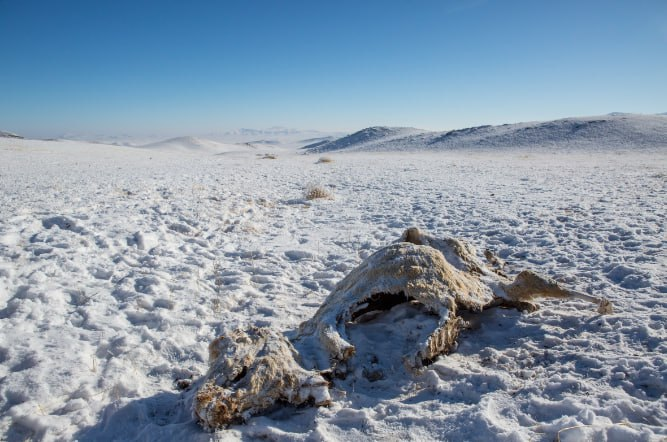
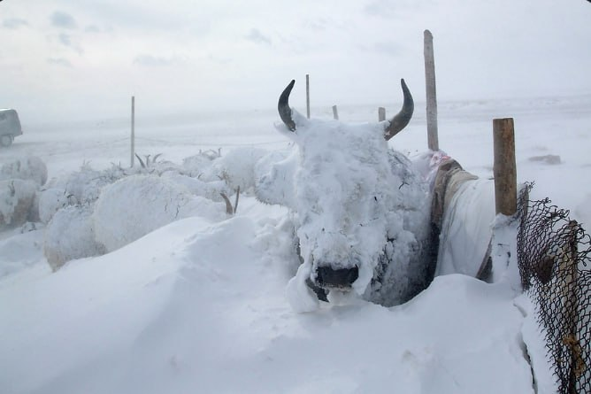

What is dzud?
The dzud, a harsh winter phenomenon prevalent in regions like Mongolia and Kazakhstan, inflicts profound impacts on animal populations. Characterized by heavy snowfall followed by bitter cold, this weather event presents dire challenges to the survival of livestock. Animals, particularly those accustomed to grazing, struggle to access food buried beneath layers of snow, leading to widespread starvation and malnutrition. Additionally, the extreme cold exacerbates these conditions, causing hypothermia and frostbite among vulnerable animals. The consequences are devastating, with substantial losses in livestock numbers, threatening the economic stability and traditional way of life of pastoral communities. Efforts to mitigate the impact of dzud typically involve emergency relief measures such as providing supplementary feed and shelter, but the long-term resilience of animal populations remains a critical concern in the face of recurring dzud events.
Impact on Animals
During a dzud, the animals endure harsh conditions that test their resilience and survival instincts. Livestock such as sheep, goats, cattle, horses, and yaks, which are integral to the livelihoods of pastoral communities, face significant challenges. The heavy snowfall blankets grazing lands, making it difficult for these animals to access food. As they attempt to forage, they must contend with the biting cold, which can lead to frostbite and hypothermia.
Preventive Measures
Preventive measures against dzud events are essential for mitigating their devastating impact on both livestock and pastoral communities. Early warning systems, stockpiling feed and essential resources, and improving livestock resilience through selective breeding and better animal husbandry practices are crucial strategies. Additionally, encouraging diversification of livelihoods and empowering communities with disaster preparedness and response plans play significant roles in enhancing resilience. By implementing these measures, communities can better withstand the challenges posed by dzud events, protecting the well-being of both animals and people in vulnerable regions.